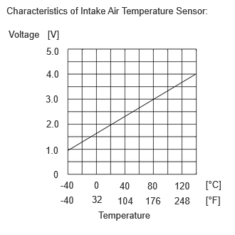
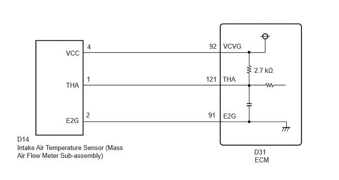

- Short to ground in THA circuit
- Short in THA to E2G circuit
- Open in VCVG circuit
| Last Modified: 10-07-2025 | 6.11:8.1.0 | Doc ID: RM100000002KW51 |
| Model Year Start: 2024 | Model: Tacoma HV | Prod Date Range: [03/2024 - ] |
| Title: T24A-FTS (ENGINE CONTROL): SFI SYSTEM (for 1Motor-HEV Model): P011011; Intake Air Temperature Sensor 1 Bank 1 Circuit Short to Ground; 2024 - 2026 MY Tacoma HV [03/2024 - ] | ||
|
DTC |
P011011 |
Intake Air Temperature Sensor 1 Bank 1 Circuit Short to Ground |
DESCRIPTION
The intake air temperature sensor, mounted on the mass air flow meter sub-assembly, monitors the intake air temperature. The intake air temperature sensor has a built-in thermistor with a resistance that varies according to the temperature of the intake air. When the intake air temperature is low, the resistance of the thermistor increases. When the temperature is high, the resistance drops. These variations in resistance are transmitted to the ECM as voltage changes.
The intake air temperature detected by the intake air temperature sensor is converted to a voltage value inside the intake air flow meter assembly, and the voltage value is then output to the ECM. Based on this signal, the ECM increases the fuel injection volume when the engine is cold to improve driveability.
HINT:
When DTC P011011 is stored, the ECM enters fail-safe mode. During fail-safe mode, the intake air temperature is estimated to be 20°C (68°F) by the ECM. Fail-safe mode continues until a pass condition is detected, and the ignition switch is then turned off.
|
DTC No. |
Detection Item |
DTC Detection Condition |
Trouble Area |
MIL |
DTC Output from |
Priority |
Note |
|---|---|---|---|---|---|---|---|
|
P011011 |
Intake Air Temperature Sensor 1 Bank 1 Circuit Short to Ground |
The intake air temperature sensor output voltage is less than 0.663 V for 0.5 seconds or more (1 trip detection logic). |
|
Comes on |
Engine |
A |
|
HINT:
When a DTC is output, check the Data List item "Intake Air Temperature" using the GTS.
Click here
![2024 - 2026 MY Tacoma HV [03/2024 - ]; T24A-FTS (ENGINE CONTROL): SFI SYSTEM (for 1Motor-HEV Model): DATA LIST / ACTIVE TEST](../../../../stylegraphics/info.gif)
|
DTC No. |
Intake Air Temperature |
Malfunction |
|---|---|---|
|
P011011 |
-39°C (-38.2°F) or less |
|
If the Data List displays a normal value, the normal value may be due to a temporary recovery from the malfunction condition. Check for intermittent problems.
MONITOR DESCRIPTION
The ECM monitors the sensor voltage and uses this value to calculate the intake air temperature. When the sensor output voltage deviates from the normal operating range, the ECM interprets this as a malfunction in the intake air temperature sensor (mass air flow meter sub-assembly) circuit, illuminate the MIL and stores a DTC.
Example:
If the intake air temperature sensor output voltage is less than 0.663 V for 0.5 seconds or more, the ECM will illuminate the MIL and store this DTC.
MONITOR STRATEGY
|
Related DTCs |
P0112: Intake air temperature sensor range check (low voltage) |
|
Required Sensors/Components (Main) |
Intake air temperature sensor (mass air flow meter sub-assembly) |
|
Required Sensors/Components (Related) |
- |
|
Frequency of Operation |
Continuous |
|
Duration |
0.5 seconds |
|
MIL Operation |
Immediate |
|
Sequence of Operation |
None |
TYPICAL ENABLING CONDITIONS
|
Monitor runs whenever the following DTCs are not stored |
None |
|
All of the following conditions are met |
- |
|
Auxiliary battery voltage |
8 V or higher |
|
Ignition switch |
ON |
|
Starter |
Off |
TYPICAL MALFUNCTION THRESHOLDS
|
Intake air temperature sensor voltage [Intake air temperature] |
Less than 0.663 V [Less than -56°C (-68.8°F)] |
CONFIRMATION DRIVING PATTERN
HINT:
- After repair has been completed, clear the DTC
and then check that the vehicle has returned to
normal by performing the following All Readiness
check procedure.
Click here
- When clearing the permanent DTCs, refer to the
"CLEAR PERMANENT DTC" procedure.
Click here
- Clear the DTCs (even if no DTCs are stored, perform the clear DTC procedure).
- Turn the ignition switch off and wait for at least 30 seconds.
- Turn the ignition switch to ON [A].
- Wait 0.5 seconds or more [B].
- Enter the following menus: Powertrain / Engine / Trouble Codes [C].
- Read the pending DTCs.
HINT:
- If a pending DTC is output, the system is malfunctioning.
- If a pending DTC is not output, perform the following procedure.
- Enter the following menus: Powertrain / Engine / Utility / All Readiness.
- Input the DTC: P011011.
- Check the DTC judgment result.
HINT:
- If the judgment result is NORMAL, the system is normal.
- If the judgment result is ABNORMAL, the system is malfunctioning.
- [A] to [C]: Normal judgment procedure.
The normal judgment procedure is used to complete DTC judgment and also used when clearing permanent DTCs.
- When clearing the permanent DTCs, do not disconnect the cable from the auxiliary battery terminal or attempt to clear the DTCs during this procedure, as doing so will clear the universal trip and normal judgment histories.
WIRING DIAGRAM
CAUTION / NOTICE / HINT
NOTICE:
- Vehicle Control History may be stored in the
hybrid vehicle control ECU assembly if the engine is
malfunctioning. Certain vehicle condition information
is recorded when Vehicle Control History is stored.
Reading the vehicle conditions recorded in both the
freeze frame data and Vehicle Control History can be
useful for troubleshooting.
(Select Powertrain in Health Check and then check the time stamp data.)
- If any "Engine Malfunction" Vehicle Control History item has been stored in the hybrid vehicle control ECU assembly, make sure to clear it. However, as all Vehicle Control History items are cleared simultaneously, if any Vehicle Control History items other than "Engine Malfunction" are stored, make sure to perform any troubleshooting for them before clearing Vehicle Control History.
PROCEDURE
PROCEDURE
|
1. |
CHECK HARNESS AND CONNECTOR |
HINT:
Make sure that the connector is properly connected. If it is not, securely connect it and check for DTCs again.
Pre-procedure1
(a) Disconnect the mass air flow meter sub-assembly connector.
(b) Turn the ignition switch to ON.
Procedure1
(c) Measure the voltage according to the value(s) in the table below.
Standard Voltage:

Click Location & Routing(D14)
Click Connector(D14)
|
Tester Connection |
Condition |
Specified Condition |
Result |
|---|---|---|---|
|
D14-4 (VCC) - D14-2 (E2G) |
Ignition switch ON |
4.8 to 5.2 V |
V |
|
D14-1 (THA) - D14-2 (E2G) |
Ignition switch ON |
4.8 to 5.2 V |
V |
(d) Turn the ignition switch off and wait for at least 30 seconds.
(e) Measure the resistance according to the value(s) in the table below.
Standard Resistance:
Click Location & Routing(D14)
Click Connector(D14)
|
Tester Connection |
Condition |
Specified Condition |
Result |
|---|---|---|---|
|
D14-4 (VCC) - D14-1 (THA) |
Ignition switch off |
2.565 to 2.835 kΩ |
kΩ |
Post-procedure1
(f) None
| OK |  |
| NG | |
|
2. |
CHECK HARNESS AND CONNECTOR (MASS AIR FLOW METER SUB-ASSEMBLY - ECM) |
Pre-procedure1
(a) Disconnect the mass air flow meter sub-assembly connector.
(b) Disconnect the ECM connector.
Procedure1
(c) Measure the resistance according to the value(s) in the table below.
Standard Resistance:
Click Location & Routing(D14,D31)
Click Connector(D14)
Click Connector(D31)
|
Tester Connection |
Condition |
Specified Condition |
Result |
|---|---|---|---|
|
D14-4 (VCC) - D31-92 (VCVG) |
Always |
Below 1 Ω |
Ω |
|
D14-4 (VCC) or D31-92 (VCVG) - Body ground and other terminals |
Always |
10 kΩ or higher |
kΩ |
Post-procedure1
(d) None
| OK | |
| NG | |
REPAIR OR REPLACE HARNESS OR CONNECTOR |